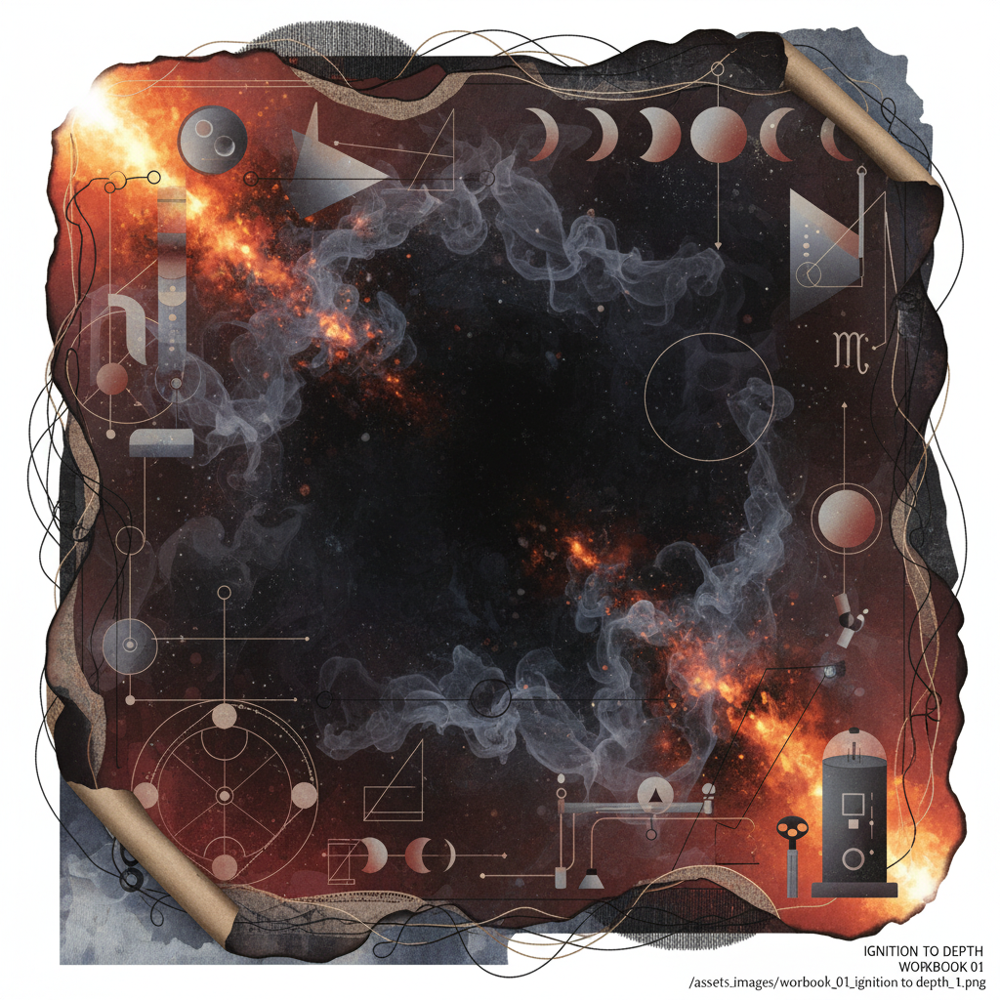

Workbook #01 // Volume I
Ignition to
Depth
Sequence: Aries New Moon
through Scorpio Full Moon
01. Lunar Context
The Arc of Emergence
The transit from Aries to Scorpio represents the soul's movement from the Primal Spark of the individual self to the Alchemical Descent into collective or hidden depths. It is the cycle of becoming, followed by the necessity of transformation.
02. Somatic Attunements
Focus on the solar plexus. Rapid, rhythmic movement. The impulse to act before the mind clarifies.
Focus on the pelvic floor. Deep, stillness-based breathing. The feeling of magnetic pull.
03. 14-Day Integration Protocol
The Transitional Bridge
| Phase | Daily Action | Somatic Focus | Outcome |
|---|---|---|---|
| Days 1—4 (Ignition) | Unfiltered journaling; 5am wake cycle. | Chest expansion. | Pure Potential |
| Days 5—9 (Development) | Drafting structure; testing boundaries. | Core stabilization. | Resistance Found |
| Days 10—14 (Descent) | Editing; quiet observation; shadow work. | Fluidity / Hips. | Deep Synthesis |
04. Research Prompt
Phenomenology of Impulse
"Investigate the precise moment an impulse arises in the body before the mind categorizes it. In the transition from Fire to Water, where does the heat go? Trace the thermodynamics of desire as it cools into obsession."